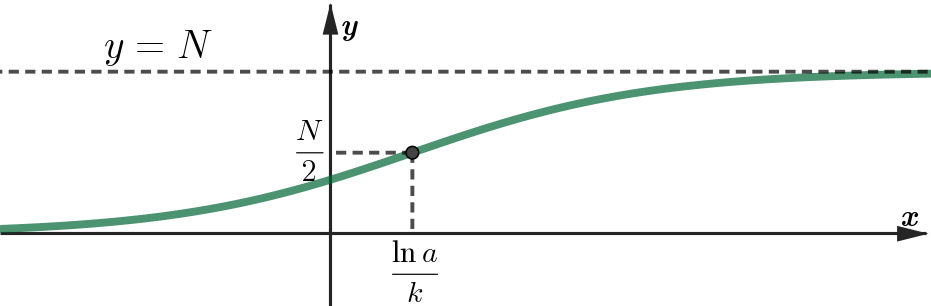
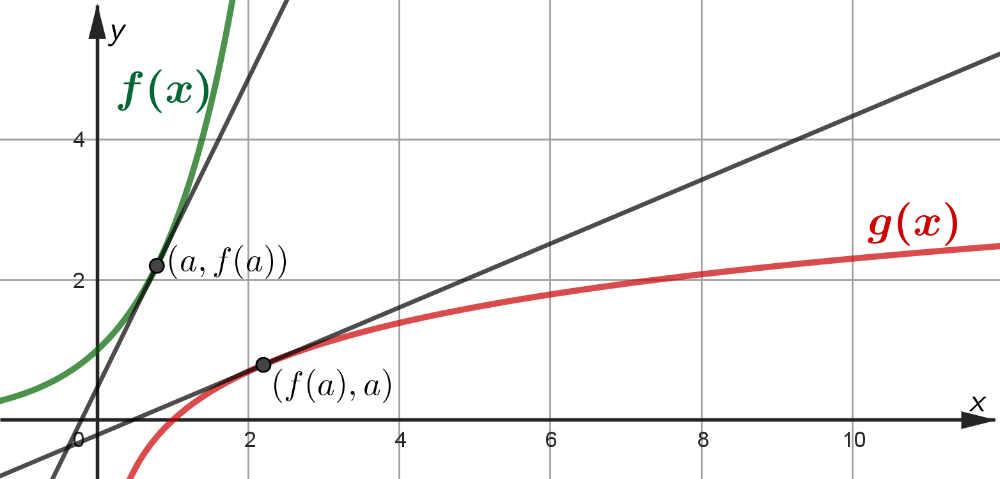

Du skal ha kompetanse om

Når \(f\) og \(g\) er omvendte funksjoner gjelder
\[ f'(a) = \frac{1}{g'(b)} \;\;\;\text{ og }\;\;\; g'(b) = \frac{1}{f'(a)} \;\;\;\;,\;\;\;\;\text{hvor } b = f(a) \]
Funksjonen \(g\) er den omvendte funksjonen til \(f\), gitt ved
\[ f(x) = x^2 \;\;\;,\;\;\; x \geq 0 \]Bestem \(g'(9)\).
Siden \(f'(x)\) = \(2x\) gir dette
\[ g'(9) = \frac{1}{f'(3)} = \frac{1}{2\cdot 3} = \frac{1}{6} \]Oppgaven i eksempelet over kunne vi også løst ved å bruke at
\[ g(x) = \sqrt{x} = x^{\frac{1}{2}} \;\;\rightarrow \;\; g'(x) = \frac{1}{2}x^{-\frac{1}{2}} = \frac{1}{2\sqrt{x}} \]og deretter sette inn \(x\) = 9, slik:
\[ g'(9) = \frac{1}{2\cdot\sqrt{9}} = \frac{1}{2\cdot 3} = \frac{1}{6} \]Deriver funksjonen
\[ f(x) = \ln(x^3+x) \]Deriver funksjonen
\[ f(x) = e^{x^3+x} \]Hvis en funksjon har en kjerne, skal vi multiplisere med den deriverte av kjernen når vi deriverer.
Derivasjonsreglene for ln\(\,u\) og e\(^u\) er eksempler på kjerneregelen
Vi har også kjerneregelen for funksjoner på formen \(f(x)\) = \(u^n\).
Deriver funksjonen
\[ f(x) = \left(x^3+x\right)^5 \]Deriver funksjonen
\[ f(x) = \sqrt{x^2+3x} = \left(x^2+3x\right)^{\frac{1}{2}} \]Den ordentlige måten å skrive derivert på er
\[ y'(x) = \frac{\Delta y}{\Delta x} \;\;\;,\;\;\; \text{ hvor } \Delta x \rightarrow 0 \]Dette gir
\[ \underline{\left(u^n\right)'} = \frac{\Delta u^n}{\Delta x} = \frac{\Delta u^n}{\Delta u}\cdot\frac{\Delta u}{\Delta x} = \underline{n\cdot u^{n-1}\cdot u'} \]Deriver funksjonen
\[ f(x) = x^3\cdot\ln x \]Deriver funksjonen
\[ f(x) = \frac{x^3}{\ln x} \]Vi kan utlede brøkregelen fra produkt- og kjerneregelen:
\[ \left(\frac{u}{v}\right)' = \left(u\cdot v^{-1}\right)' = u'\cdot v^{-1}+u\cdot(-1)v^{-2}\cdot v' = \frac{u'v-uv'}{v^2} \]Eksponentialfunksjoner vokser med en fast prosent hver periode. Vekstfaktoren \(b\) gir hvor mange prosent veksten er.
I midten av 2026 var verdens befølning 8,3 milliarder. Vi antar at folketallet øker med ca. 1 % per år.
Bestem en modell for folketallet \(t\) år etter midten av 2026, og bestem den momentane vekstfarten i midten av 2026 og i midten av 2036.
Antall milliarder mennesker er gitt ved
\[ f(t) = 8\text{,}3\cdot1\text{,}01^t = 8\text{,}3\cdot e^{\ln(1\text{,}01)\cdot t} \]og vekstfarten er
\[ f'(t) = 8\text{,}3\cdot e^{\ln(1\text{,}01)\cdot t}\cdot\ln(1\text{,}01) \]Vekstfarten i midten av 2026 er
\[ f'(t) = 8\text{,}3\cdot e^{\ln(1\text{,}01)\cdot0}\cdot\ln(1\text{,}01) \approx 0\text{,}083 \text{ milliarder per år} \]Vekstfarten i midten av 2036 er
\[ f'(t) = 8\text{,}3\cdot e^{\ln(1\text{,}01)\cdot10}\cdot\ln(1\text{,}01) \approx 0\text{,}091 \text{ milliarder per år} \]En logistisk modell,
\[ f(x) = \frac{N}{1+a\cdot e^{-k\cdot x}} \]har tilnærmet en eksponentiell vekst i starten, før den dempes mot en øvre grense \(N\). Vendepunktet er i \(\left(\frac{\ln a}{k},\frac{N}{2}\right)\).
25 kaniner settes ut på en øy. Etter 10 måneder øker antall kaniner mest. Etter lang tid er det 100 kaniner på øya.
Lag en logistisk modell som gir antall kaniner på øya.
Siden det er 100 stk. etter lang tid, får vi
\[ K(t) = \frac{100}{1+a\cdot e^{-k\cdot t}} \]Siden det er 25 kaniner ved \(t\) = 0, får vi
\[ K(0) = \frac{100}{1+a} = 25 \;\;\;\rightarrow\;\;\;a=3 \]Siden veksten er størst etter 10 måneder, får vi
\[ 10 = \frac{\ln a}{k} = \frac{\ln 3}{k} \approx \frac{1}{k} \;\;\;\rightarrow\;\;\; k \approx 0,10 \]En logistisk modell for antall kaniner \(K(t)\) etter \(t\) måneder er dermed
\[ K(t) = \frac{100}{1+3e^{-0,10\cdot t}} \]